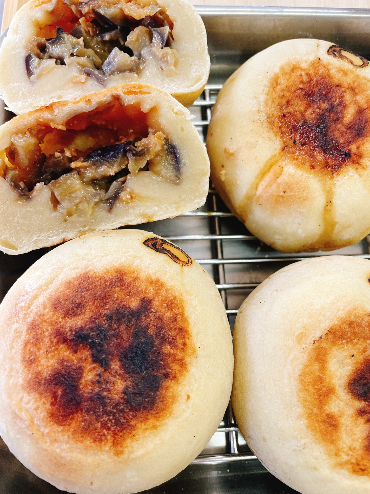

おやきのこだわり
生地、具材、地元野菜、手づくりのやさしさ。毎日食べてもほっとする味を目指しています。

生地へのこだわり
ふっくら、もっちり。具材をやさしく包み込みながら、素材の味を引き立てる生地に仕上げています。噛むほどにほっとする、素朴なおいしさを大切にしています。
具材へのこだわり
おやきの主役は、中に包む具材です。野菜そのものの甘みや旨みを感じられるよう、味付けはやさしく、食べ飽きない味を心がけています。


地元野菜へのこだわり
信州の風土で育った野菜には、その土地ならではの味わいがあります。地元の恵みを活かしながら、季節の変化も楽しめるおやきを目指しています。
手づくりへのこだわり
ひとつずつ包むからこそ生まれる、形のやさしさ、手のぬくもり。機械には出せない、素朴な表情も大切にしています。


信州の郷土食としての魅力
おやきは、信州で昔から親しまれてきた郷土食です。どこか懐かしく、食べると心がほどけるような味わいを、今の暮らしにも寄り添うかたちで届けていきます。